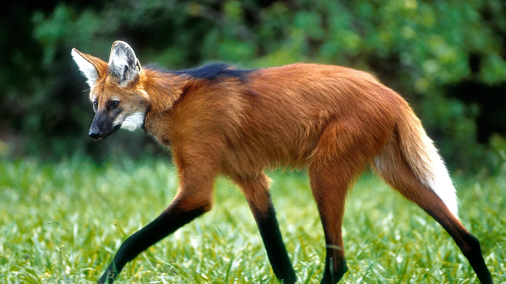
Lobo-guará
O lobo-guará é o maior canídeo da América do Sul, destacando-se
por suas pernas longas e finas, pelagem avermelhada e uma crina
preta ao longo do dorso. Apesar do nome, ele é um animal dócil,
solitário e não forma alcateias como os lobos europeus ou
americanos.
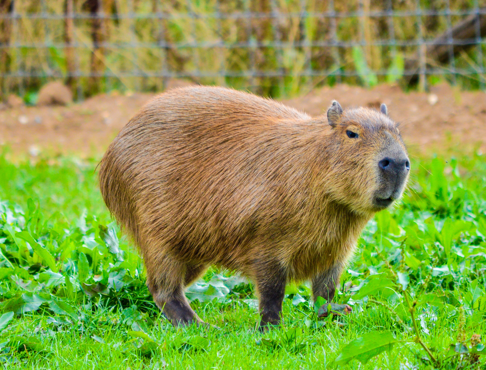
Capivara
A capivara é o maior roedor do mundo, destacando-se por seu corpo
robusto de pelagem marrom, patas levemente membranadas e cabeça
grande de formato retangular. Apesar do tamanho, ela é um animal
dócil, extremamente social e vive em grandes grupos familiares ao
contrário de outros mamíferos solitários.
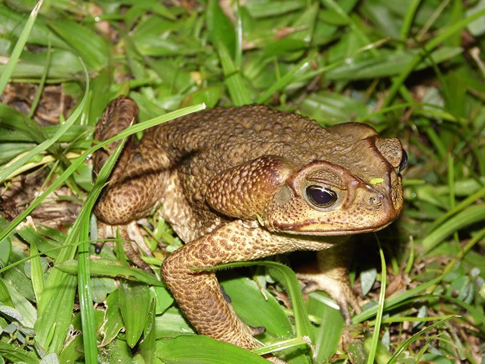
Sapo-cururu
O sapo-cururu é um dos maiores anfíbios do Brasil, destacando-se
por sua pele rugosa e cheia de verrugas, tons de marrom ou cinza e
grandes glândulas de veneno atrás dos olhos. Bastante adaptável,
ele é um predador voraz, essencial para o ecossistema por
controlar pragas e devorar insetos ao contrário de espécies que
possuem dietas restritas.
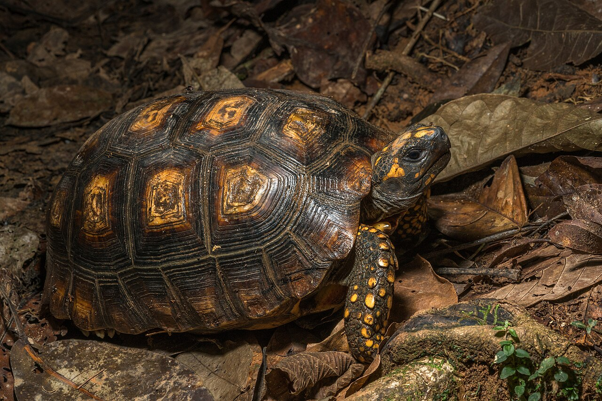
Jabuti-piranga
O jabuti-piranga é uma das maiores tartarugas terrestres nativas
do Brasil, destacando-se por sua carapaça escura com manchas
amarelas ou alaranjadas no centro dos escudos e escamas vermelhas
nas patas e cabeça. Muito resistente, ele é um réptil de hábitos
diurnos, essencial para as florestas ao dispersar sementes de
frutos caídos ao contrário de animais com digestão destrutiva.
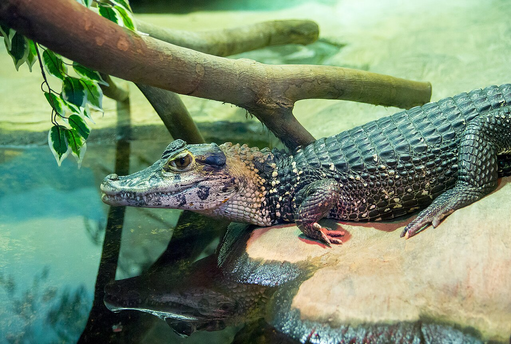
Jacaré-açu
O jacaré-açu é o maior predador da América do Sul, destacando-se
por sua imponente pele de coloração escura a preta, cabeça larga e
dentes robustos projetados para capturar grandes presas. Habitante
da Bacia Amazônica, ele é um réptil carnívoro de topo de cadeia,
essencial para o equilíbrio dos rios e lagos ao contrário de
predadores menores de menor impacto ecológico.
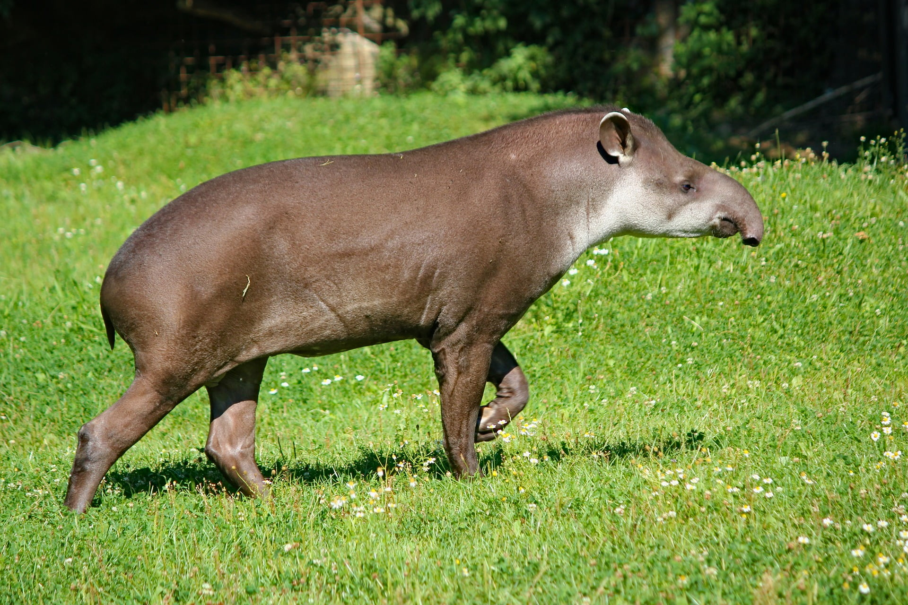
Anta
A anta-brasileira (Tapirus terrestris) é o maior mamífero
terrestre da América do Sul, destacando-se por seu corpo robusto,
pelagem marrom-acinzentada e uma pequena tromba móvel usada para
coletar alimentos. Habitante de florestas e áreas próximas à água,
como a Amazônia e o Pantanal, ela é um herbívoro essencial para o
equilíbrio ecológico, atuando como a principal "jardineira das
florestas" ao dispersar sementes de grandes árvores, ao contrário
de herbívoros menores de menor impacto na regeneração das matas.
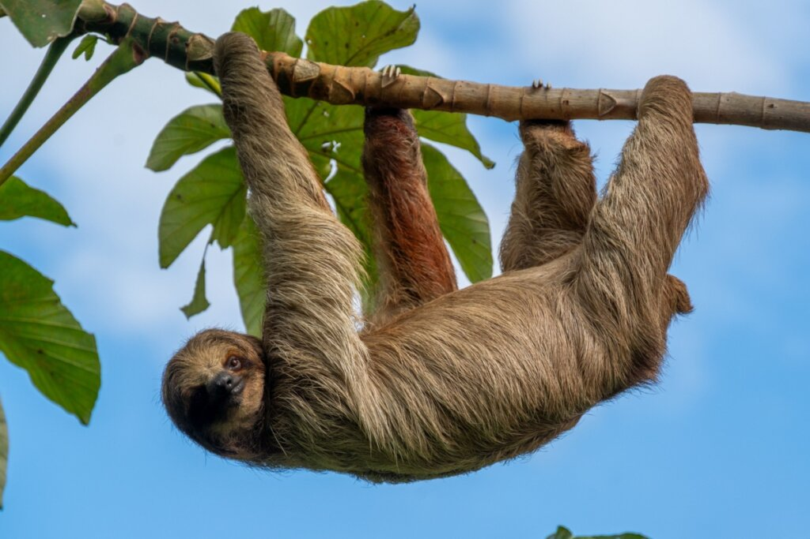
Bicho-preguiça
A preguiça-de-três-dedos é um dos mamíferos mais lentos do mundo,
destacando-se por seus braços longos, garras fortes e uma pelagem
cinzenta que abriga algas para camuflagem. Habitante das copas das
árvores na Amazônia e na Mata Atlântica, ela é um herbívoro
arborícola essencial para o fluxo de nutrientes da floresta,
vivendo quase toda a vida no alto, ao contrário de mamíferos
terrestres de hábitos ágeis.
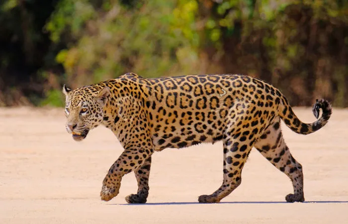
Onça-pintada
A onça-pintada (Panthera onca) é o maior felino das Américas,
destacando-se por sua mandíbula poderosíssima e pelagem amarela
com manchas pretas em formato de rosetas. Habitante de florestas
densas e planícies inundáveis, como a Amazônia e o Pantanal, ela é
um carnívoro de topo de cadeia, essencial para o controle
populacional de outras espécies e equilíbrio dos ecossistemas, ao
contrário de predadores menores de menor impacto ecológico.
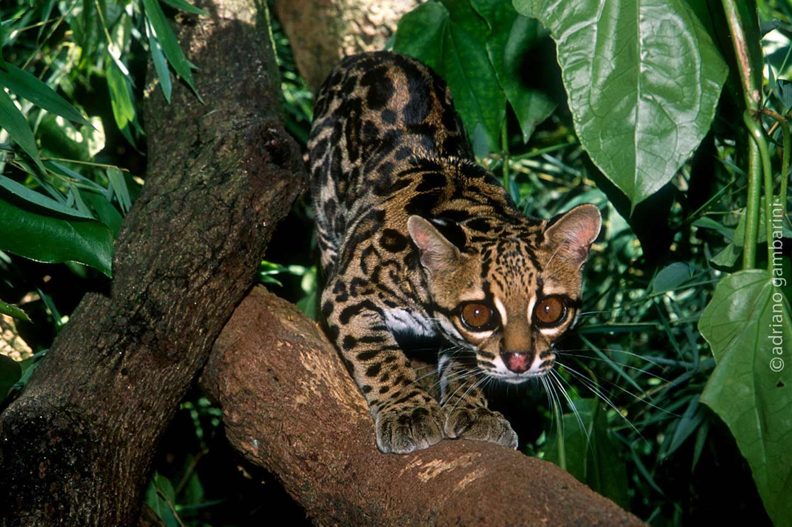
Gato-maracajá
O gato-maracajá é um dos felinos mais ágeis das Américas,
destacando-se por seus olhos grandes, cauda longa e tornozelos que
giram 180 graus para descer troncos de cabeça para baixo.
Habitante de florestas densas como a Amazônia, ele é um carnívoro
arborícola essencial para o controle de pequenos animais nas copas
das árvores, ao contrário de felinos que caçam apenas no solo.
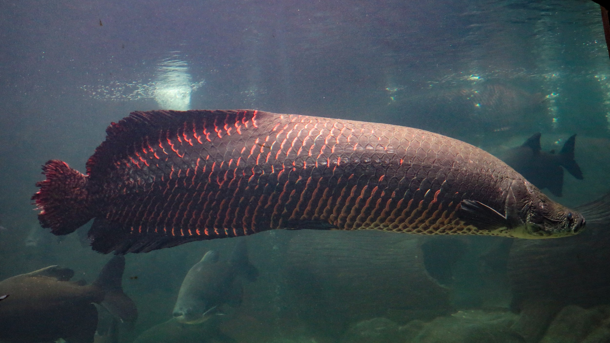
Peixe-pirarucu
O pirarucu é um dos maiores peixes de água doce do mundo,
destacando-se por seu corpo robusto com escamas avermelhadas na
cauda e pela necessidade de respirar o ar atmosférico. Habitante
dos rios e lagos da Bacia Amazônica, ele é um carnívoro de grande
porte essencial para o equilíbrio das águas, ao contrário de
peixes menores que dependem apenas de brânquias para sobreviver.
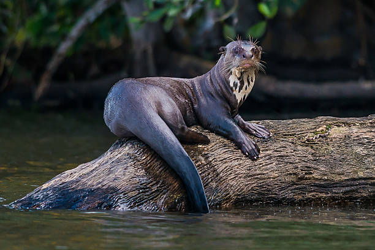
Ariranha
A ariranha é o maior carnívoro semiaquático da América do Sul,
destacando-se por seu corpo hidrodinâmico, cauda achatada e uma
mancha branca única no pescoço que serve como identificação.
Habitante de rios e áreas alagadas do Pantanal e da Amazônia, ela
é um predador de topo de cadeia essencial para o controle
populacional de peixes, ao contrário de mamíferos terrestres que
evitam ambientes aquáticos.
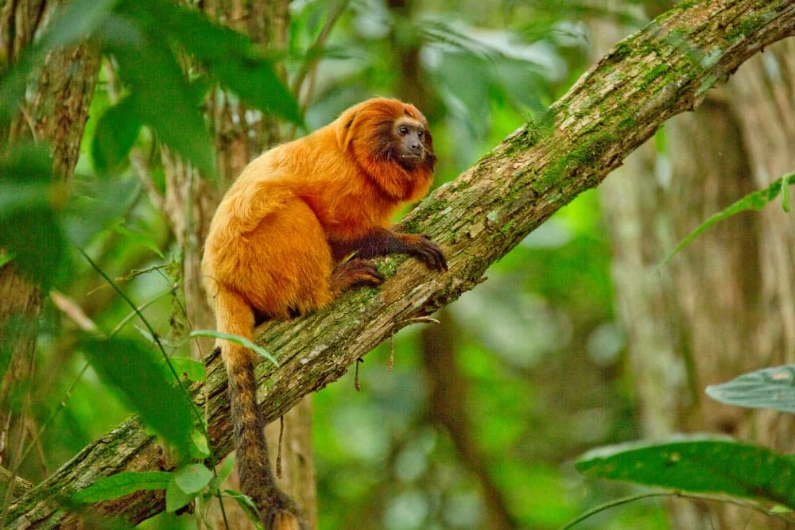
Mico-leão-dourado
O mico-leão-dourado é um dos primatas mais raros do mundo,
destacando-se por sua pelagem longa de cor laranja-vibrante e uma
juba marcante ao redor do rosto. Habitante exclusivo das copas das
árvores da Mata Atlântica, ele é um onívoro essencial para a
regeneração florestal através da dispersão de sementes, ao
contrário de macacos maiores que habitam o chão da floresta.
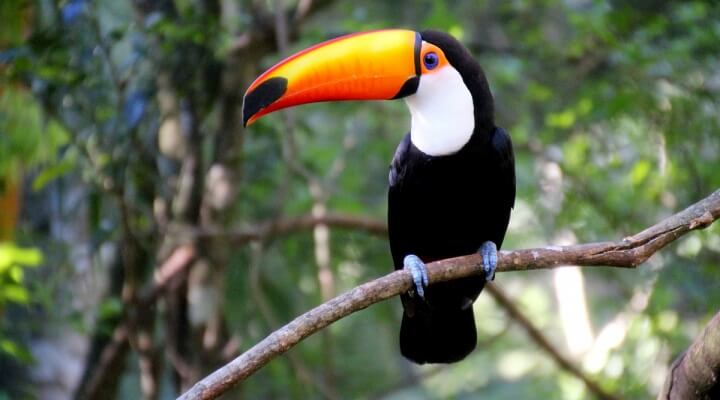
Tucano-toco
O tucano-toco é a maior espécie de tucano das Américas,
destacando-se por seu enorme bico amarelo-alaranjado com uma
mancha preta na ponta e plumagem predominantemente negra.
Habitante de áreas abertas e bordas de florestas, ele é um onívoro
essencial para o plantio natural de árvores nativas através das
fezes, ao contrário de aves de bicos pequenos que não engolem
frutos inteiros.
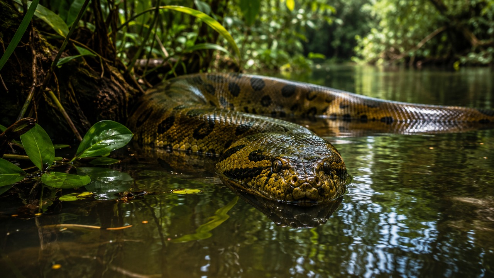
Sucuri-verde
A sucuri-verde é uma das maiores e mais pesadas serpentes do
mundo, destacando-se por seu corpo robusto verde-oliva com manchas
escuras e olhos posicionados no topo da cabeça. Habitante de áreas
alagadas como o Pantanal e a Amazônia, ela é uma predadora
semiaquática de topo de cadeia essencial para o controle de
grandes roedores, ao contrário de cobras menores que caçam apenas
pequenas presas.
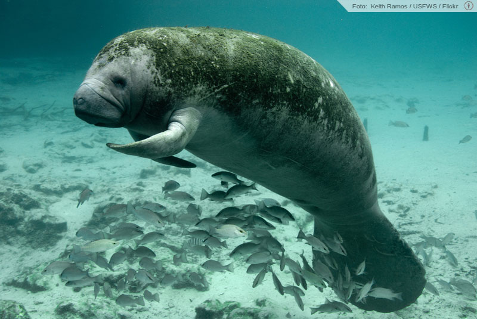
Peixe-boi-da-amazônia
O peixe-boi-da-amazônia é o maior mamífero aquático de água doce
da América do Sul, destacando-se por seu corpo robusto e
cilíndrico de coloração cinza, pele lisa e uma mancha branca ou
rosada no peito. Habitante exclusivo dos rios da Bacia Amazônica,
ele é um herbívoro essencial para o controle da vegetação aquática
e fertilização das águas, ao contrário de grandes mamíferos
marinhos que habitam apenas os oceanos.
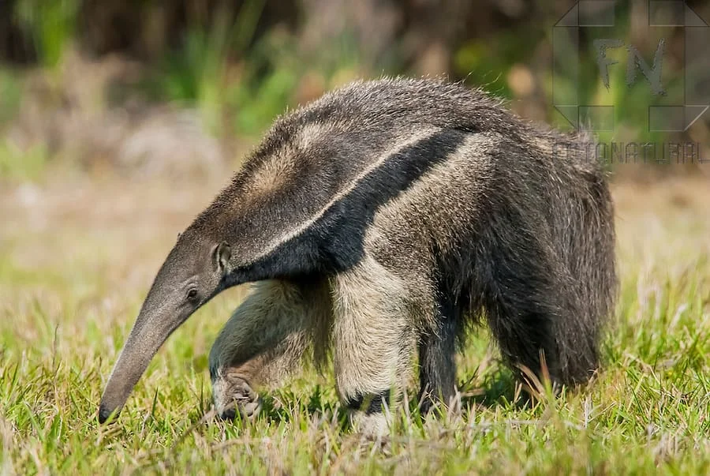
Tamanduá-bandeira
O tamanduá-bandeira é o maior de sua família nas Américas,
destacando-se por seu focinho longo em forma de tubo, pelagem
acinzentada com uma faixa preta diagonal e cauda grande e peluda
semelhante a uma bandeira. Habitante de áreas abertas como o
Cerrado, ele é um insetívoro essencial para o controle
populacional de insetos sociais, ao contrário de mamíferos menores
com menor capacidade de escavação.
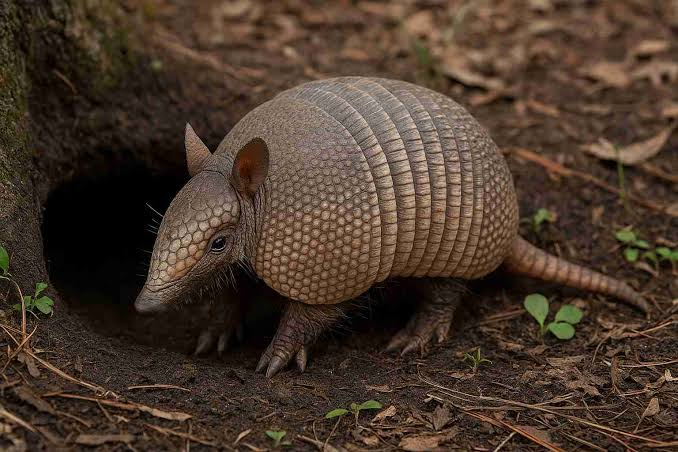
Tatu-bola
O tatu-bola é uma das menores e mais raras espécies de tatu do
Brasil, destacando-se por sua capacidade única de se curvar
completamente em uma esfera perfeita e blindada quando ameaçado.
Habitante exclusivo de áreas secas como a Caatinga e o Cerrado,
ele é um insetívoro essencial para o equilíbrio do solo e controle
de pragas, ao contrário de outros tatus que cavam buracos
profundos para fugir de predadores.
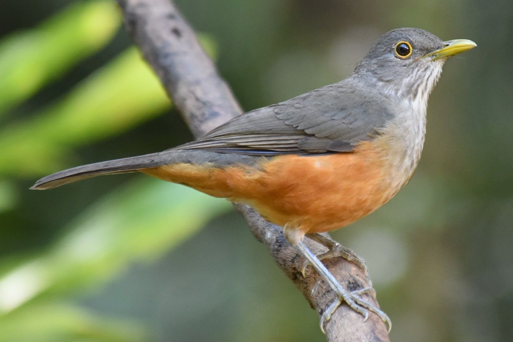
Sabiá-laranjeira
O sabiá-laranjeira é uma das aves mais populares e simbólicas do
Brasil, destacando-se por seu canto melódico e marcante e pelo
ventre de coloração ferrugem ou alaranjada viva. Habitante de
matas e áreas urbanas arborizadas, ele é um onívoro essencial para
a dispersão de sementes e controle de insetos nas cidades, ao
contrário de aves florestais que evitam a presença humana.
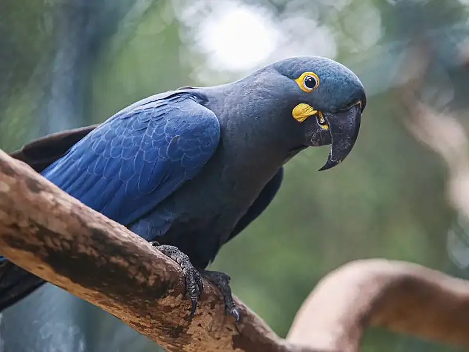
Arara-azul
A arara-azul-grande é a maior espécie de psitacídeo do mundo,
destacando-se por sua plumagem azul-cobalto intensa, cauda longa e
detalhes amarelo-vivo ao redor dos olhos e do bico. Habitante de
paisagens abertas como o Pantanal, ela é uma frugívora essencial
para a dinâmica das florestas ao quebrar e espalhar sementes de
palmeiras, ao contrário de aves menores que não possuem bicos
fortes o suficiente para abrir frutos duros.

Jaguatirica
A jaguatirica é um dos felinos de médio porte mais distribuídos e
adaptáveis das Américas, destacando-se por sua pelagem amarelada
coberta por manchas e listras pretas horizontais únicas. Habitante
de diversos ecossistemas como o Cerrado e a Mata Atlântica, ela é
uma predadora carnívora essencial para o equilíbrio das populações
de pequenos mamíferos, ao contrário de felinos de grande porte que
focam apenas em grandes presas.